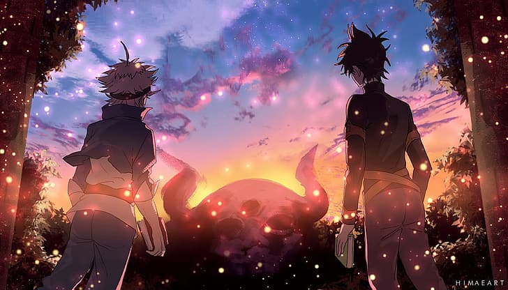

01
Clover Kingdom
The largest and most influential kingdom where Magic Knights protect the people under the leadership of the Wizard King.
Learn MoreJourney through the history of the Clover Kingdom, legendary Magic Knights, powerful Grimoires, ancient kingdoms, and the unforgettable story created by Yūki Tabata.
In the Clover Kingdom, magic defines every person's future. Two orphan boys, Asta and Yuno, dream of becoming the Wizard King despite walking completely different paths. One possesses extraordinary magical talent, while the other has absolutely none.
Their journey becomes a tale of determination, rivalry, friendship, sacrifice, and the battle against devils that threaten the entire world.
The legendary Anti-Magic Grimoire chosen by Asta.
Yuno receives the rare grimoire blessed with luck.
Both rivals pursue the kingdom's highest title.
Ancient devils awaken and plunge the world into chaos.

Anime Episodes
Magic Knight Squads
Explore the kingdoms, organizations, and magical artifacts that shape the history of the Clover Kingdom.
The largest and most influential kingdom where Magic Knights protect the people under the leadership of the Wizard King.
Learn MoreNine elite squads defend the kingdom against threats, each led by a powerful captain with unique magical abilities.
Learn MoreMagical books that evolve together with their owners, unlocking increasingly powerful spells throughout life.
Learn MoreDiscover the visionary mangaka whose imagination gave birth to the world of Black Clover and inspired millions of fans across the globe.
Yūki Tabata is the Japanese manga artist and storyteller behind Black Clover. His work combines epic fantasy, magical battles, unforgettable characters, and the powerful theme of perseverance. Since its debut in 2015, Black Clover has become one of the world's most celebrated modern shōnen series.
"Surpass your limits. Right here. Right now."